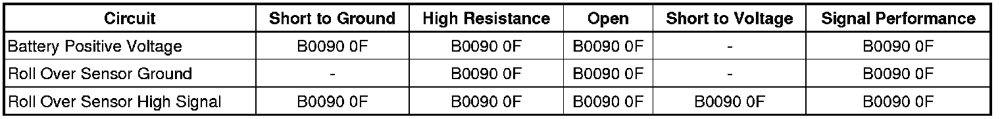

B0090
DTC B0090
Diagnostic Instructions
* Perform the Diagnostic System Check - Vehicle (Initial Inspection and Diagnostic Overview) prior to using this diagnostic procedure.
* Review Strategy Based Diagnosis (Initial Inspection and Diagnostic Overview) for an overview of the diagnostic approach.
* Diagnostic Procedure Instructions (Initial Inspection and Diagnostic Overview) provides an overview of each diagnostic category.
DTC Descriptors
DTC B0090 0F
- Rollover Sensor Erratic
DTC B0090 3A
- Rollover Sensor Incorrect Component Installed
DTC B0090 39
- Rollover Sensor Internal Electronic Failure
DTC B0090 71
- Rollover Sensor Invalid Serial Data Received
Diagnostic Fault Information

Circuit/System Description
The inflatable restraint vehicle rollover sensor (ROS) utilizes battery power supply and a bidirectional interface circuit. The ROS modulates current on the interface to send ID, state of health, and deployment commands to the inflatable restraint sensing and diagnostic module (SDM). When the ignition is turned on the ROS responds by performing internal diagnostics and sending an ID to the SDM. The ROS continually communicates status messages to the SDM, which determines if a fault is present in the ROS circuit. If the fault is present, the SDM will set a diagnostic trouble code (DTC).
Conditions for Running the DTC
Ignition voltage is between 9-16 volts.
Conditions for Setting the DTC
Any of the following conditions must exist for 5 seconds:
B0090 0F
* The SDM received a fault present message from the ROS.
* The ROS is in assembly plant mode and the SDM is in production mode.
* The SDM has not received any data from the ROS.
B0090 3A
* The SDM has received an ID message from the vehicle rollover sensor which does not match the ID stored in the SDM memory.
* The SDM has reset the vehicle rollover sensor twice without detecting the correct ID message.
B0090 39
* The SDM has received a NOK message from the vehicle rollover sensor.
* The SDM has not received a message.
B0090 71
The SDM has received invalid serial data from the vehicle rollover sensor.
Action Taken When the DTC Sets
* The SDM commands the AIR BAG indicator ON.
* The side air bag deployment loops will be disabled for rollover events only. For side impact events the side air bags are still enabled.
Conditions for Clearing the DTC
* The condition for setting the DTC no longer exists.
* A history DTC will clear once 100 malfunction-free ignition cycles have occurred.
Diagnostic Aids
If either the SDM or vehicle rollover sensor were replaced verify that the correct part numbers were used for the vehicle application and the components were properly configured. Refer to Control Module References (Programming and Relearning) for SDM and ROS setup and programming.
Reference Information
Schematic Reference
SIR Schematics ([1][2]Air Bag Systems)
Connector End View Reference
Component Connector End Views (Connector Views)
Description and Operation
SIR System Description and Operation (Description and Operation)
Electrical Information Reference
* Circuit Testing (Component Tests and General Diagnostics)
* Connector Repairs (Component Tests and General Diagnostics)
* Testing for Intermittent Conditions and Poor Connections (Component Tests and General Diagnostics)
* Wiring Repairs (Component Tests and General Diagnostics)
Scan Tool Reference
Control Module References (Programming and Relearning) for scan tool information.
Circuit/System Testing
Important: When removing connectors inspect for damage or corrosion. Damage or corrosion in the following requires repair or replacement of the affected component/connector.
* The vehicle rollover sensor
* The SDM module
* The vehicle rollover sensor harness connector
* The SDM wiring harness connector
1. Verify DTC B0090 39 is not set.
• If DTC is set, replace the rollover sensor.
2. Ignition OFF, disconnect the harness connector at the rollover sensor and the SDM.
3. Test for less then 5 ohms between the rollover sensor ground circuit terminal 6 and ground.
• If greater then the specified range, test the circuit for an open/high resistance.
4. Test for less then 5 ohms between the serial data circuit terminal 5 and the SDM occupant sensor serial data circuit terminal 58.
• If greater then the specified range, test the circuit for a short to ground or an open/high resistance.
5. Ignition ON, test for less than 1 volt between the serial data circuit terminal 5 and ground.
• If greater then the specified range, test the circuit for a short to voltage.
6. Verify a test lamp illuminates between the B+ circuit terminal 1 and ground.
• If the test lamp does not illuminate, test the circuit for an open/high resistance. If the circuit fuse is open, test the circuit for a short to ground, if the circuit tests normal, replace the rollover sensor.
7. With a scan tool, clear DTCs. Verify DTC B0090 is not set.
• If DTC is set, replace the SDM.
Repair Instructions
Perform the Diagnostic Repair Verification (Verification Tests) after completing the diagnostic procedure.
* Inflatable Restraint Vehicle Rollover Sensor Replacement (Inflatable Restraint Vehicle Rollover Sensor Replacement)
* SIR/SRS Wiring Repairs (Component Tests and General Diagnostics)
* Control Module References (Programming and Relearning) for SDM and ROS replacement, setup, and programming